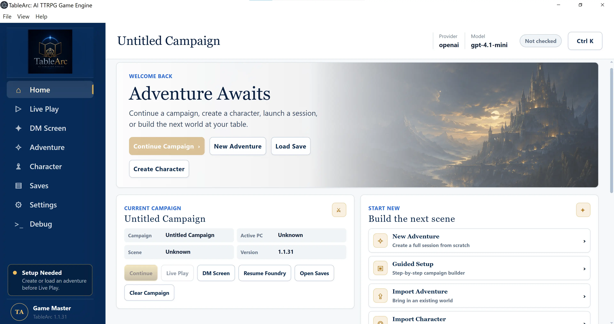

01 / SOFTWARE · ACTIVE DEVELOPMENT
TableArc
The AI imagines. The engine remembers. A local-first RPG system built around persistent campaigns, explicit rules and inspectable consequences.
Explore TableArc ↗
GreenKappa Labs / Featured projects
Independent games and creative software designed around decisions, consequences and systems worth exploring.
Five featured studio projects · Development concepts and prototypes · Not all products are available for download or purchase
Playground / Experiment 001
Try a simplified nine-room browser experiment inspired by No Such Room. Collect three records, follow the shift forecast and escape before the twelfth Shift. No account, AI or download required.
Free interactive concept demo · Simplified mechanics · Not a tabletop rules replacement

Studio initiative / Software
A local-first RPG engine in development. TableArc uses structured campaign state, rules-aware procedures, and inspectable runtime behavior to keep play consistent across sessions and AI providers.

Players describe what they want to do. The engine handles character state, maps, combat, rules, consequences, and saves, with a way to inspect what changed and why.
A standalone, local-first Cyberpunk RED AI-GM built for gigs, Netrunning, tactical firefights and persistent street consequences. Inspired by TableArc’s state-first philosophy, but developed as its own application.
v0.5.0 source prototype · Windows acceptance underway · No public installer yet
Explore TableArc REDThe creative studio
The card games, TableArc, and browser experiments share an interest in what people do when a system pushes back.
Original strategy, deduction and party games.
Explore games02 / DIGITALTableArc, playable experiments and digital systems.
Explore TableArc03 / NARRATIVEOriginal settings shaped by rules and consequences.
Explore worlds04 / ENGINEERINGApplied AI and creative workflow systems.
Explore toolsThe shifting-house browser microgame is playable now. The tabletop prototypes are preparing for structured playtesting.
How the work is approached
A game should tell you what your decision changed. Software should do the same. The aim is to make both interesting to use and possible to examine.
Find out what someone is trying to do before designing another screen or adding another mechanic.
Define which part of a system can change the facts, and keep those changes visible.
Use real workflows, diagnostics, and accessibility checks—not just a convincing demo.
Capabilities
A useful product needs working code, an interface people understand, documentation they can use, and tests that catch failures.
Provider integrations, grounded generation, local models, structured outputs, and human-readable failure handling.
Responsive interfaces, desktop packaging, stateful workflows, maps, dashboards, and user-facing diagnostics.
Power Platform, SharePoint, Power Automate, operational tracking, forms, notifications, and process redesign.
Architecture plans, testing protocols, decision records, sourcebooks, presentations, and accessible reference material.
About the builder
An independent developer and designer working across applied AI, interactive software, and original tabletop games.
Current projects include TableArc, TableArc RED, three original card games, and a small browser Playground. The work ranges from structured RPG state to physical spatial puzzles and AI-assisted party games.
Contact
Interested in testing a game, discussing TableArc or TableArc RED, or collaborating on an interactive project? Get in touch.


 Small Gods, Large Debts
Small Gods, Large Debts